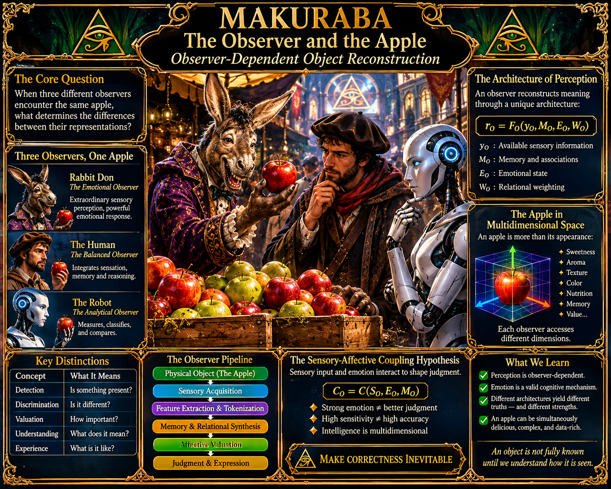

The Observer and the Apple

Observer-Dependent Object Reconstruction
Research Installment 01: The Architecture of Perception
From sensory detection to emotional valuation: a formal model of observer-dependent reconstruction.
- The Central Proposition
An observer does not simply receive an object. An observer reconstructs an actionable representation of that object through the limitations and capabilities of its own architecture.
Consider a single apple examined by three observers:
- Rabbit Don: An observer with exceptionally high sensory sensitivity and powerful affective responses. The apple is a rich sensory and emotional experience.
- The Human: An observer integrating ordinary biological sensation, memory, learned associations, emotion, and reasoning.
- The Synthetic Observer: An artificial observer whose reconstruction depends on its actual sensors, computational architecture, stored information, and evaluation procedures.
All three encounter the same physical object. Yet their available information, internal representations, judgments, and expressions may differ.
The research question is:
How does the architecture of an observer determine what an object becomes within that observer's representation of reality?
- Three Distinct Operations
We must first distinguish three processes that are often mistakenly treated as one.
Detection: Is something present?
Discrimination: Is it different from something else?
Valuation: How important, desirable, threatening, or meaningful is it?
An observer may detect an apple without identifying its variety. It may identify its variety without knowing whether it tastes good. It may recognize excellent quality without particularly caring about eating it.
These are separate capabilities.
- Defining the Object
Let the physical apple be A.
We can describe selected properties using a feature vector:
x_A = [x_1, x_2, ..., x_n]
For example:
x_A = [sweetness, acidity, aroma, firmness, colour, temperature]
This vector is a selected description of the apple, not the complete physical state of the apple.
The distinction matters. The object exists independently of any one observer's description, even though our access to it is mediated by observation.
- Defining the Observer
We propose the observer architecture:
O = (S_O, D_O, M_O, E_O, W_O, J_O)
Where:
- S_O: Sensory acquisition capabilities.
- D_O: Discrimination capabilities.
- M_O: Memory and learned associations.
- E_O: Affective and emotional architecture.
- W_O: Relational weighting.
- J_O: Judgment and inference procedures.
This is a proposed research framework, not an established standardized scientific model.
Each observer has a different configuration of these components.
- Sensory Acquisition
The observer does not necessarily receive every property of the object.
We can represent its available information as:
y_O = P_O(x_A) + ε_O
Where:
- P_O represents the observer's acquisition function.
- ε_O represents noise and uncertainty.
- y_O represents the information actually available to that observer.
Rabbit Don may directly detect aromatic properties that the human observer cannot distinguish.
The synthetic observer may have excellent optical resolution but no olfactory sensor.
The human may integrate taste, smell, touch, and visual appearance.
Their observations are not interchangeable.
- Observer-Dependent Reconstruction
The next step is the reconstruction of meaning:
r_O = F_O(y_O, M_O, E_O, W_O)
Here, r_O represents the observer's internal representation of the apple.
The same apple may therefore produce different representations.
A particularly important distinction is evidence provenance.
A robot might report that an apple is sweet because its camera recognizes a variety associated with sweetness. Rabbit Don might report sweetness because he actually tasted it.
The resulting words may be identical, but the evidence behind them is different.
We must distinguish direct measurement, inference, memory, learned association, and prediction.
- The Observer Pipeline
A simplified conceptual pipeline:
Physical object → Sensory acquisition → Feature extraction and discrimination → Memory and relational synthesis → Affective valuation and inference → Judgment and expression.
Real biological and artificial systems are recurrent. They contain feedback loops, parallel processes, and interactions between stages. The pipeline is therefore an explanatory model, not a claim that every observer operates in a simple linear sequence.
- Sensory Reliability and Emotional Intensity
An important empirical distinction emerges from multisensory research.
A 2025 study by Allar and colleagues examined how rats integrate taste and smell when making flavor-preference judgments. The researchers found reliability-dependent integration: the contribution of sensory information changed according to its reliability.
This suggests a useful mathematical starting point:
s_hat = [(s_1 / σ_1²) + (s_2 / σ_2²)] / [(1 / σ_1²) + (1 / σ_2²)]
Where:
- s_1 and s_2 are two sensory estimates.
- σ_1² and σ_2² are their respective uncertainty variances.
- s_hat is the combined estimate.
This is a simplified reliability-weighted estimator under particular statistical assumptions, not a universal formula for every sensory system.
We must not confuse two different properties:
- Intensity: How strongly a signal or experience is registered.
- Reliability: How consistently and accurately it represents the property being measured.
A powerful sensation is not necessarily an accurate one.
This distinction is especially important when examining Rabbit Don.
- The Affective Architecture
We can provisionally represent affective state using:
e_O = [v, a, m, r]
Where:
- v: Valence, positive or negative evaluation.
- a: Arousal or activation.
- m: Motivational significance.
- r: Regulation capacity.
For Rabbit Don, an apple may trigger extraordinary enthusiasm, sensory excitement, and desire.
For the human, it may produce moderate pleasure and a more balanced evaluation.
For the synthetic observer, an evaluation system might assign high desirability or priority without necessarily experiencing emotion.
We must not equate computational valuation with phenomenal experience. Whether an artificial system feels anything is a separate question requiring its own investigation.
Emotion is also not the opposite of logic. Emotional and analytical processes can interact, support one another, or conflict.
- The Relational Mosaic
We now introduce a concept particularly important to the larger MAKURABA programme.
An object is not represented only by a collection of isolated properties. Its identity can also be constructed through relationships among those properties and other concepts.
We can model this as a weighted graph:
G_O = (V_O, E_O, W_O)
Where:
- V_O: Concepts and descriptors.
- E_O: Relationships between concepts.
- W_O: Weights and types of relationships.
For Rabbit Don, the apple may connect to aroma, sweetness, pleasure, luxury, memory, anticipation, and personal significance.
For a human, it may connect to nutrition, price, taste, familiarity, and preference.
For a robot, it may connect to cultivar classification, chemical measurements, visual features, agricultural data, and predicted quality.
This produces an important research question:
Can two observers possess radically different relational structures while still correctly identifying the same object?
The answer appears to be yes, provided they retain sufficient task-relevant correspondence. But the exact conditions require formal investigation.
- The Sensory-Affective Coupling Hypothesis
We propose a provisional construct:
C_O = C(S_O, E_O, M_O)
Call this Sensory-Affective Coupling (SAC).
It describes how sensory information and affective valuation interact in constructing an observer's representation and behavior.
The construct remains hypothetical. It requires operational definitions, measurable variables, and experimental validation.
Strong sensory-affective coupling does not automatically mean greater intelligence, better accuracy, or deeper understanding.
- Experimental Protocol: The Market Stall
Rabbit Don, the human, and the synthetic observer encounter the same coded apples.
The experiment proceeds through controlled stages:
- Visual-only examination.
- Aroma examination.
- Taste and texture examination, where applicable.
- Quality judgment and confidence reporting.
- Emotional or evaluative reporting.
- Comparison against independent instrumental measurements.
Reference measurements could include sugar concentration, acidity, firmness, and volatile composition.
Selected trials could introduce misleading descriptions or attractive presentation to examine the influence of expectation.
The synthetic observer's actual sensor suite must be documented. We cannot attribute capabilities it does not possess.
- Falsifiable Predictions
The following are hypotheses, not established conclusions.
H1: Rabbit Don will outperform the other observers on selected sensory discrimination tasks, assuming the fictional sensory advantages are operationally defined and reproduced.
H2: Rabbit Don will show stronger affective preferences for selected apples.
H3: Greater emotional intensity will not necessarily correspond to greater objective accuracy.
H4: Additional chemical sensors will improve the synthetic observer's ability to predict certain apple properties that cannot reliably be established through visual inspection alone.
Each prediction can fail. A useful research programme must preserve the possibility of being wrong.
- Intelligence as a Multidimensional Property
Instead of treating intelligence as a single ranking, we propose an exploratory vector:
I_O = [I_s, I_d, I_a, I_r, I_m, I_c, I_p]
Where:
- I_s: Sensory acquisition.
- I_d: Discrimination.
- I_a: Affective valuation.
- I_r: Abstract reasoning.
- I_m: Memory and associative synthesis.
- I_c: Computational and analytical capability.
- I_p: Predictive and adaptive capability.
This is a proposed taxonomy, not a standardized intelligence measurement.
An observer may excel in one dimension while performing poorly in another.
The question should not simply be which observer is more intelligent, but which observer is better equipped for a particular task, under particular conditions.
- Research Conclusion
The apple is one physical object, but it can participate in several different representational worlds.
Rabbit Don, the human, and the synthetic observer do not necessarily encounter the same informational or experiential reality, even when they encounter the same physical object.
This gives us the foundation for the next investigation:
Can observer-dependent representations be translated into a shared mathematical space without erasing the differences that make each observer distinct?
That question leads directly into vector spaces, relational weighting, embeddings, and the proposed Hilbert-space model.
The next installment will investigate the mathematics of observer-conditioned representation.
Selected Research References
- Allar, I. B., Hua, A., Rowland, B. A., & Maier, J. X. (2025). “Gustatory Cortex Neurons Perform Reliability-Dependent Integration of Multisensory Flavor Inputs.” Current Biology, 35(3), 600–611.e3. https://doi.org/10.1016/j.cub.2024.12.015
- Poerio, G. L., Kondo, H. M., & Moore, B. C. J. (2024). “Sensing and feeling: an overview.” Philosophical Transactions of the Royal Society B, 379, 20230242. https://doi.org/10.1098/rstb.2023.0242
- Motoki, K., Spence, C., & Velasco, C. (2023). “When visual cues influence taste/flavour perception: A systematic review.” Food Quality and Preference, 111, 104996. https://doi.org/10.1016/j.foodqual.2023.104996
- Spence, C. (2024). “What is the Relation between Chemosensory Perception and Chemosensory Mental Imagery?” Multisensory Research, 37, 365–394. https://doi.org/10.1163/22134808-bja10130
- Mohanty, A., Freeman, J., & Jin, J. (2025). “Top-down influences on the perception of emotional stimuli.” Nature Reviews Psychology, 4, 388–403. https://doi.org/10.1038/s44159-025-00446-w
Research integrity note: These sources provide empirical and review-level context for selected components of the framework. They do not establish the complete observer model, the SAC construct, or the fictional capabilities of Rabbit Don. Those remain proposed research concepts.